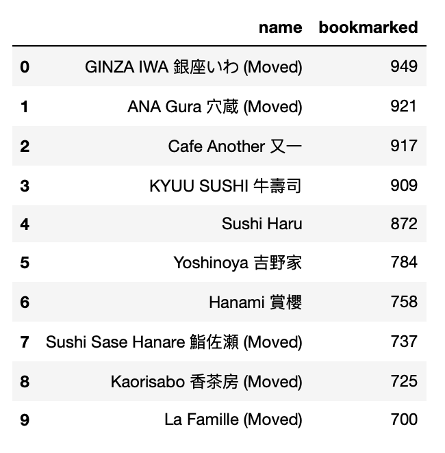
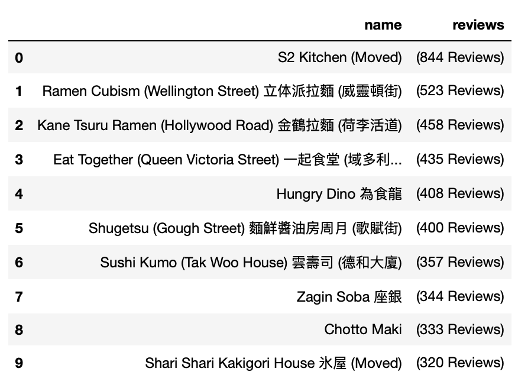
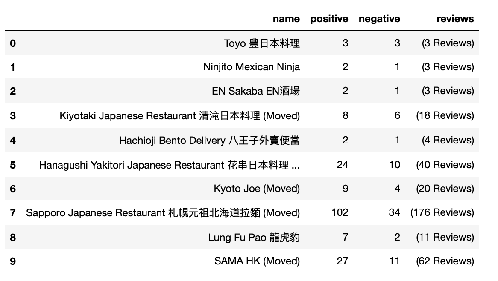
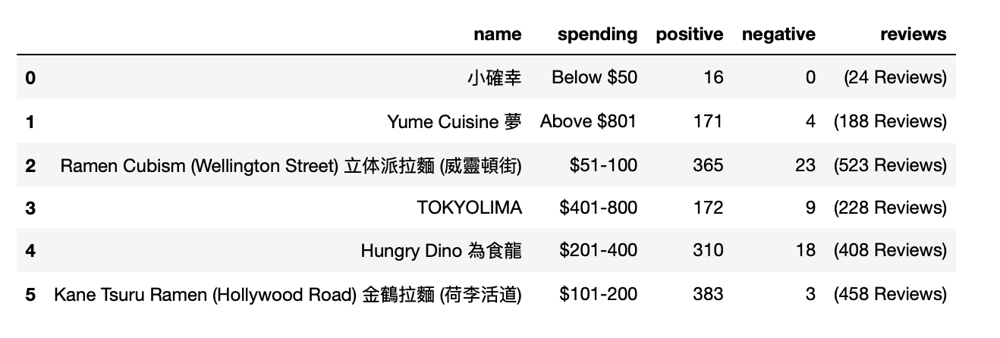
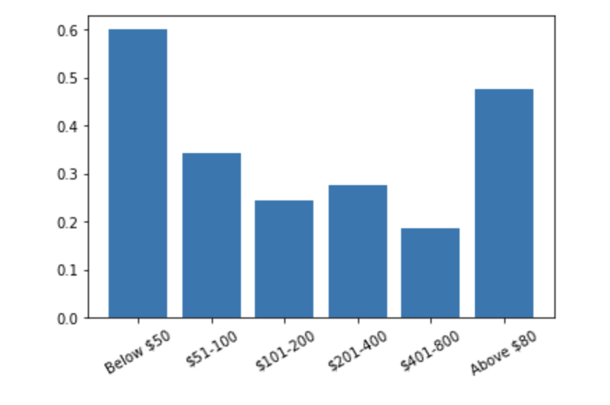

This is a simple analysis of the Japanese restaurants in Central.
I scrapped the data of Japanese restaurants in Central on openrice.com using ParseHub,and there are 278 resluts filtered by the website (see link here), while several not Japanese cuisine, so I just deleted those rows, then, cause I focus on comparing the reviews and the customer feedback of the restaurants, so I use facet by blank and delete those without reviews or feedback.
At last, I got data of 218 restaurants.
These 10 below are bookmarked the most times, implying gaining most interest from the customers.
These 10 restaurants are probably the most popular which have most reviews from customers.
I calculated the postive/negative rate using postive or negative to devide the sum of postive and negative, to show the rate of good/bad feedback, and these 10 hold highest positive rate.
These 10 restaurants have highest negative rate.
Below are 5 highest-postive-rate restaurants with high spending-per-head(above $801), probably good choices for rich people :)
I also made some overall analysis based on spending category, the data shows that,restaurants spend the least and the most both have good rate from customers,60% and 48% separately, and the medium ones are less satisfied.
Most of the Japanese restaurants in Central are relatively expensive, with more than half of them costing more than $200 per person,and 21% above $801.